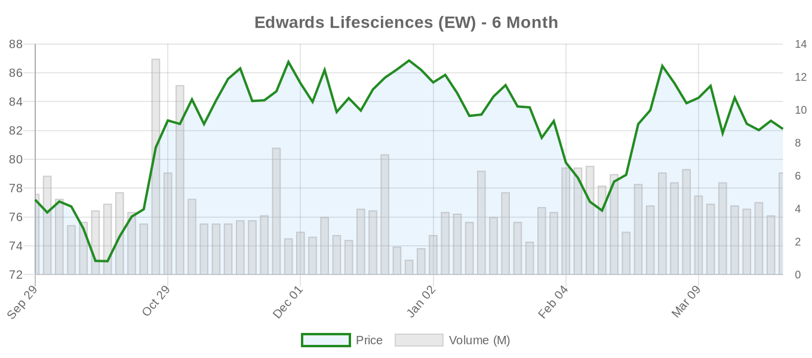
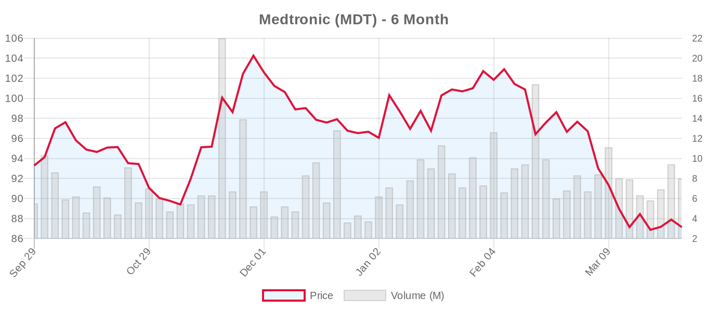
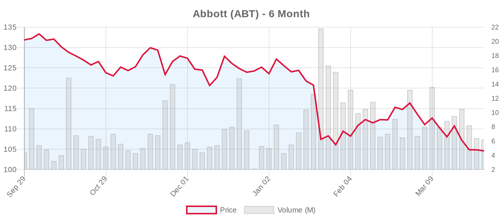
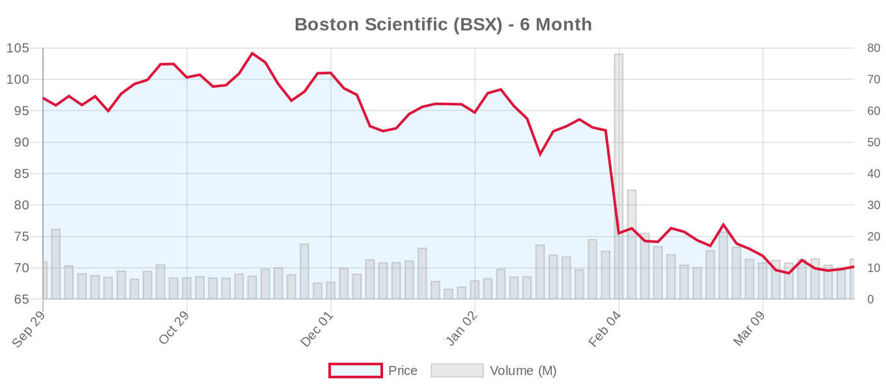

The Valve Wire
TRANSCATHETER VALVE TECHNOLOGY DIGEST
By E. Nolan Beckett · March 27, 2026
|
| |
|
0 research
•
0 news
•
0 regulatory
•
31 trials
|
|
Executive Summary
Valve industry stocks showed mixed performance today with Edwards declining 3.4% while maintaining positive 6-month gains. Several aortic valve trials updated their status, including new recruiting studies for the SAPIEN 3 Ultra RESILIA valve and J-Valve's transfemoral system. No major clinical findings or regulatory updates emerged today, but ongoing landmark trials continue enrollment across mitral and tricuspid interventions.
Today marks a quieter period in valve technology developments, with market attention focused on upcoming earnings reports from major device companies in April. The structural heart space continues its methodical progress through clinical validation, though questions persist about long-term durability and appropriate patient selection for transcatheter approaches versus surgical alternatives.
Valve Industry Stocks

Edwards Lifesciences (EW)

Current Performance: $79.34, down $2.76 (-3.36%) today
- 6-month performance: +2.79% ($72.30-$87.89 range)
- Market cap: $46.1B | P/E: 43.83 (trailing), 23.99 (forward) | Beta: 0.93
- 52-week range: $65.94-$87.89
- Analyst consensus: Buy with $97.12 target (range: $84-$110, 26 analysts)
- Next earnings: April 22, 2026 (EPS est: $0.73, Rev est: $1.60B)
Edwards faced selling pressure today despite maintaining relatively strong 6-month gains. The company's premium valuation reflects market confidence in its TAVR leadership, though upcoming earnings will be critical given competitive pressures and questions about growth sustainability in mature markets.
Medtronic (MDT)

Current Performance: $87.14, down $0.53 (-0.60%) today
- 6-month performance: -6.59% ($85.78-$105.55 range)
- Market cap: $111.9B | P/E: 24.34 (trailing), 14.39 (forward) | Beta: 0.73
- 52-week range: $79.55-$106.33
- Analyst consensus: Buy with $111.08 target (range: $92-$125, 25 analysts)
- Next earnings: May 20, 2026 (EPS est: $1.64, Rev est: $9.65B)
Medtronic's Evolut platform continues competing with Edwards in TAVR, though the stock has underperformed over six months. The company's diversified portfolio provides stability, but valve segment growth remains crucial for meeting analyst expectations.
Abbott (ABT)

Current Performance: $103.99, down $0.58 (-0.55%) today
- 6-month performance: -21.13% ($102.41-$134.17 range)
- Market cap: $180.7B | P/E: 27.95 (trailing), 16.98 (forward) | Beta: 0.74
- 52-week range: $103.68-$139.06
- Analyst consensus: Buy with $132.64 target (range: $113-$158, 25 analysts)
- Next earnings: April 16, 2026 (EPS est: $1.15, Rev est: $11.00B)
Abbott's significant 6-month decline reflects broader market concerns, though MitraClip remains the gold standard for transcatheter mitral repair. The company's upcoming earnings will be closely watched for structural heart segment performance and guidance.
Boston Scientific (BSX)

Current Performance: $69.17, down $1.00 (-1.43%) today
- 6-month performance: -28.72% ($67.56-$105.65 range)
- Market cap: $102.8B | P/E: 35.65 (trailing), 17.69 (forward) | Beta: 0.70
- 52-week range: $67.56-$109.50
- Analyst consensus: Strong Buy with $102.00 target (range: $83-$124, 32 analysts)
- Next earnings: April 22, 2026 (EPS est: $0.79, Rev est: $5.19B)
Boston Scientific has experienced the steepest decline among major valve companies, despite strong analyst support. The company's structural heart portfolio, while growing, faces intense competition and the stock appears oversold relative to fundamentals.
Anteris Technologies (AVR.AX)

Current Performance: AUD $7.90, down $0.15 (-1.86%) today
- 6-month performance: +19.70% ($5.20-$9.79 range)
- Market cap: $0.8B | P/E (forward): -3.62 | Beta: 0.42
- 52-week range: $4.26-$9.79
- Analyst target: $13.00 (1 analyst)
Anteris continues developing its DurAVR transcatheter aortic valve with anti-calcification technology, representing a smaller-cap play on valve innovation. The positive 6-month performance reflects investor interest in novel approaches to valve durability.
The valve industry continues navigating a complex environment where technological advancement must be balanced against rigorous clinical validation. While transcatheter approaches have gained acceptance, questions about long-term outcomes and appropriate patient selection remain paramount for both investors and clinicians.
Clinical Trial Updates
Aortic Valve Trials
- NCT06420830: SAPIEN 3 Ultra RESILIA Valve Registry - RECRUITING, 150 patients, Institut universitaire de cardiologie et de pneumologie de Québec (updated March 27)
- NCT03383445: VIVA Trial (TAVR vs SAVR for small annuli) - ACTIVE_NOT_RECRUITING, 300 patients, Centre de Recherche Quebec (updated March 27)
- NCT07450196: SAPIEN 3 for Type-0 Bicuspid AS in China - NOT_YET_RECRUITING, 170 patients, Chinese Academy of Medical Sciences (updated March 27)
- NCT06455787: J-Valve Transfemoral Pivotal Study - RECRUITING, 194 patients, JC Medical/Edwards affiliate (updated March 25)
- [LANDMARK] NCT02701283: Evolut Low Risk long-term follow-up - ACTIVE_NOT_RECRUITING, 2,223 patients, Medtronic (updated March 19)
Mitral Valve Trials
Mitral Repair:
Mitral Replacement:
Tricuspid Valve Trials
Tricuspid Repair:
Tricuspid Replacement:
- [LANDMARK] NCT04482062: TRISCEND II (Evoque tricuspid replacement) - ACTIVE_NOT_RECRUITING, 864 patients, Edwards (updated February 27)
- [LANDMARK] NCT05071768: GATE Pivotal (NaviGate tricuspid replacement) - COMPLETED, 31 patients
The landmark trials continue their methodical progress, with particular attention on the recruiting mitral and tricuspid studies that will define the future scope of transcatheter interventions. However, the terminated APOLLO trial serves as a reminder that not all transcatheter approaches will prove viable, underscoring the importance of rigorous clinical validation.
As we await upcoming earnings from major valve companies in April, the industry continues balancing innovation with evidence-based validation — a tension that will ultimately determine which transcatheter approaches earn lasting clinical acceptance.
|
|
|
All Sources
Clinical Trials (31)
-
NCT06420830: Valve Performance of the SAPIEN 3 Ultra RESILIA Valve: A Prospective Registry With Central Echocardiography Analysis.
RECRUITING · N/A · Institut universitaire de cardiologie et de pneumologie de Québec, University Laval · Updated: 2026-03-27
-
NCT05372627: NHLBI-Emory Advanced Cardiac CT Reconstruction
NOT_YET_RECRUITING · N/A · National Heart, Lung, and Blood Institute (NHLBI) · Updated: 2026-03-27
-
NCT03383445: Transcatheter Aortic Valve Replacement Versu Surgical Aortix Valve Replacement for Treating Elderly Patients With Severe Aortic Stenosis and Small Aortic Annuli: A Prospective Randomized Study The VIVA Trial
ACTIVE_NOT_RECRUITING · NA · Centre de Recherche de l'Institut Universitaire de Cardiologie et de Pneumologie de Quebec · Updated: 2026-03-27
-
NCT04139616: Prospective Validation of a Pre-Specified Algorithm for the Management of Conduction Disturbances Following TAVR
RECRUITING · N/A · Centre de Recherche de l'Institut Universitaire de Cardiologie et de Pneumologie de Quebec · Updated: 2026-03-27
-
NCT07450196: A Prospective, Multicenter, Observational Study Evaluating Safety and Effectiveness of SAPIEN 3 Transcatheter Aortic Valve Replacement for Type-0 Bicuspid Aortic Valve Stenosis Patients in China
NOT_YET_RECRUITING · N/A · Chinese Academy of Medical Sciences, Fuwai Hospital · Updated: 2026-03-27
-
NCT03561805: Prolonged Continuous ECG Monitoring Prior to Transcatheter Aortic Valve Implantation
ACTIVE_NOT_RECRUITING · NA · Centre de Recherche de l'Institut Universitaire de Cardiologie et de Pneumologie de Quebec · Updated: 2026-03-27
-
NCT04298593: Assessment of Arrhythmic BuRdEn With Post-ProCedural COntinuous ElectRocarDiographic Monitoring in Patients Undergoing Transcatheter Aortic Valve Implantation: The RECORD Study
ACTIVE_NOT_RECRUITING · NA · Institut universitaire de cardiologie et de pneumologie de Québec, University Laval · Updated: 2026-03-27
-
NCT06455787: J-Valve Transfemoral Pivotal Study
RECRUITING · NA · JC Medical, Inc., an affiliate of Edwards Lifesciences LLC · Updated: 2026-03-25
-
NCT07365345: Frequency of Electrical Acupoint Stimulation on Hypotension in TAVR Patients
RECRUITING · NA · Air Force Military Medical University, China · Updated: 2026-03-25
-
NCT07488052: Home-based Outpatient Multicenter Evaluation Using Electrocardiogram (HOME-ECG)
RECRUITING · N/A · National Defense Medical Center, Taiwan · Updated: 2026-03-25
-
NCT02153307: Ambulatory Electrocardiographic Monitoring for the Detection of High-Degree Atrio-Ventricular Block in Patients With New-onset PeRsistent LEft Bundle Branch Block After Transcatheter Aortic Valve Implantation. The "MARE" Study
RECRUITING · NA · Centre de Recherche de l'Institut Universitaire de Cardiologie et de Pneumologie de Quebec · Updated: 2026-03-24
-
NCT06298344: The Role of Thiamine After Transcatheter Closure in Children With Left-to-Right Shunt Congenital Heart Disease
COMPLETED · EARLY_PHASE1 · Universitas Sumatera Utara · Updated: 2026-03-24
-
NCT05459233: Valve Hemodynamic Optimization Based on Doppler-Echocardiography vs Catheterization Measurements Following ViV TAVR
RECRUITING · NA · Institut universitaire de cardiologie et de pneumologie de Québec, University Laval · Updated: 2026-03-24
-
NCT03683355: Characterization of RadiOlabeled Tracer Uptake Pattern in Noninfected Transcatheter Aortic Valves.
COMPLETED · N/A · Centre de Recherche de l'Institut Universitaire de Cardiologie et de Pneumologie de Quebec · Updated: 2026-03-24
-
NCT07215143: Observational Study to Collect Data of Patient Which Recieving a TAVI in TAVI Procedure
NOT_YET_RECRUITING · N/A · IHF GmbH - Institut für Herzinfarktforschung · Updated: 2026-03-24
-
NCT07486739: Functional And STructural Assesment of the Heart by Artificial Intelligence-enabled Electrocardiogram for the Management of Atrial Fibrillation
NOT_YET_RECRUITING · NA · Seoul National University Hospital · Updated: 2026-03-23
-
NCT07479433: The NAVIGATE-PCI Registry: A New Approach to VIew CT-derived Guidance Ahead of Stenting To Plan Efficient PCI
RECRUITING · N/A · HeartFlow, Inc. · Updated: 2026-03-23
-
NCT03152773: Heart Catheterization Using Magnetic Resonance Imaging (MRI) Fluoroscopy and Passive Guidewires
SUSPENDED · NA · National Heart, Lung, and Blood Institute (NHLBI) · Updated: 2026-03-20
-
NCT07095335: Evaluating Simulation Experiences to Help Navigate Racism and Hidden Bias
ENROLLING_BY_INVITATION · NA · Queen's University · Updated: 2026-03-20
-
NCT04198870: [LANDMARK] REPAIR-MR (MitraClip vs surgery for primary MR)
ACTIVE_NOT_RECRUITING · NA · Abbott Medical Devices · Updated: 2025-11-12
-
NCT05051033: [LANDMARK] PRIMATY (MitraClip vs medical therapy for secondary MR)
RECRUITING · NA · Annetine Gelijns · Updated: 2026-03-03
-
NCT03706833: [LANDMARK] COAPT (MitraClip for secondary MR - long-term follow-up)
ACTIVE_NOT_RECRUITING · NA · Edwards Lifesciences · Updated: 2026-02-23
-
NCT04101357: [LANDMARK] APOLLO (Tendyne TMVR)
TERMINATED · PHASE1, PHASE2 · BioNTech SE · Updated: 2025-03-18
-
NCT03242642: [LANDMARK] Intrepid TMVR Pivotal
RECRUITING · NA · Medtronic Cardiovascular · Updated: 2026-03-09
-
NCT05490992: [LANDMARK] SAPIEN M3 TMVR Early Feasibility
COMPLETED · NA · Pro Consumer Safety - Public Health Behavior Solutions · Updated: 2024-02-06
-
NCT03904147: [LANDMARK] TRILUMINATE Pivotal (TriClip for TR)
ACTIVE_NOT_RECRUITING · NA · Abbott Medical Devices · Updated: 2024-12-19
-
NCT04097145: [LANDMARK] CLASP II TR (PASCAL for TR)
RECRUITING · NA · Edwards Lifesciences · Updated: 2026-01-21
-
NCT04482062: [LANDMARK] TRISCEND II (Evoque tricuspid replacement)
ACTIVE_NOT_RECRUITING · NA · Edwards Lifesciences · Updated: 2026-02-27
-
NCT05071768: [LANDMARK] GATE Pivotal (NaviGate tricuspid replacement)
COMPLETED · NA · University of Manitoba · Updated: 2024-06-27
-
NCT04728698: [LANDMARK] PARTNER 3 Low Risk (5-year follow-up)
WITHDRAWN · PHASE2 · Sorrento Therapeutics, Inc. · Updated: 2021-09-16
-
NCT02701283: [LANDMARK] Evolut Low Risk (long-term follow-up)
ACTIVE_NOT_RECRUITING · NA · Medtronic Cardiovascular · Updated: 2026-03-19
|
|
The Valve Wire
AI-synthesized from PubMed, bioRxiv, medRxiv, JACC, NEJM, Circulation, JAMA,
Lancet, JTCVS, Google News, FDA, CMS, ClinicalTrials.gov, SEC EDGAR, Yahoo Finance
© Marc The Valve Wire. All rights reserved.
|
|
|